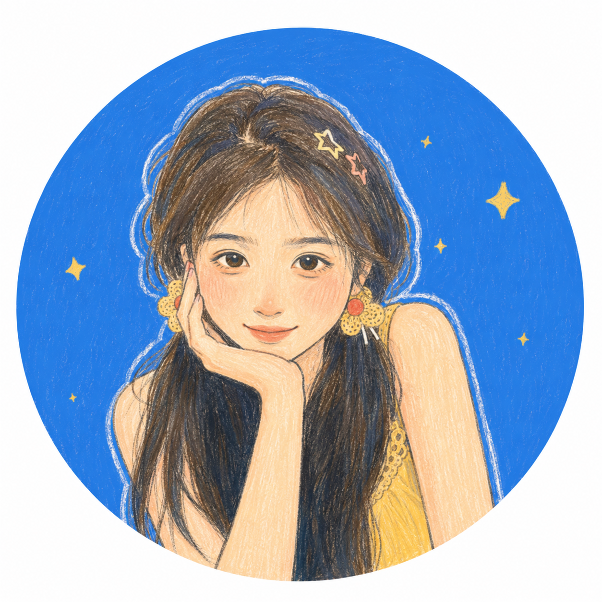

“我没有能够拯救的你”——米沃什《献辞》
评论从 1945 年华沙与起义死者进入，讨论诗歌作为见证：它无法阻止坦克，却可以拒绝官方语言、时间与遗忘对死者的再次覆盖。
把书放在墓上，不是完成悼念，而是承认诗人仍需为未能拯救之人承担记录的责任。
我不是按照书目单成为中文系学生的。小说先把我带进人的命运，诗让我听见语言内部的震动，理论又迫使我回头追问：我们如何欲望、如何想象他人，又如何被时代写进自己的故事。
WHU 中文系 NJU 现当代文学
打开阅读星匣
从一个人物的欲望，到一种语言的可能。我的阅读在这些问题之间往返。
不是为了尽快得到答案，而是想知道一个答案怎样被历史、语言和他人的目光制造出来。
会从一个意象追到一个概念，再从理论折返小说现场。书与书之间的连线，比单本书的结论更让我兴奋。
谁在欲望？欲望通过谁发生？知识让人看见了什么，又让人看不见什么？
我更愿意保留作品内部的争辩：不替人物过早裁决，也不把阅读变成一张结论清单。
小说、诗歌、戏剧与理论，构成不断延伸的阅读坐标。
从现有书架里挑出小说、诗歌、思想与身体研究，不展示文学史教材。
累计时长、读完的书与留下的笔记。数据按蓝蓝提供的阅读记录保留。
1888 小时 21 分钟之外，还有从一个句子出发的停顿、重读和追问。
横轴从小说现场走向理论抽象，纵轴从个体经验走向时代结构。封面节点来自蓝蓝的 Apple Books 书库。
以阅读阶段组织已读内容，保留从小说、诗歌到理论的移动。
以下内容根据指定文件提炼，没有补写不存在的阅读经历。
评论从 1945 年华沙与起义死者进入，讨论诗歌作为见证：它无法阻止坦克，却可以拒绝官方语言、时间与遗忘对死者的再次覆盖。
评论注意到雇工西拉斯从未直接发声，只能由沃伦与玛丽讲述；关于“家”的两种定义，也因此成为归属、尊严与被接纳的争论。
古希腊戏剧鉴赏把俄狄浦斯与特瑞西阿斯放进两套知识体系的对抗：启蒙理性与神性合法性，同时也是政治权力的冲突。
读书笔记关注多声部对话、精神分裂、索尼娅的牺牲与漫长救赎。小说的力量不在提供社会药方，而在把人性深处的矛盾如实放到读者面前。
文学为什么能让人暂时离开欲望？一种语言怎样被另一种语言改变？这两组问题，将小说、哲学与翻译论连接起来。
从“欲、美术、解脱”追索批评标准，再检验：哲学概念照亮了哪些人物关系，又可能遮蔽哪些生活细节？不把作品只当作理论的例证。
阅读这组星星 ↗把跨文化理解、术语精确、译本文学价值和作品的“来世”分开讨论。在共同的问题上对读，不把不同时代的文章虚构成同一场论战。
阅读这组星星 ↗依据“文学批评个案”课程文件中的《红楼梦评论》细读、严复与钱钟书预习笔记、两篇翻译论对读整理。
从小说现场进入理论，再带着新的问题回到人物身边。